組み立てマニュアル（Dタイプ）

対象モデル
| コード番号 |
|---|
| JB-4GB-Carbon-S-D（標準） |
| JB-4GB-Carbon-B-D（ベアボーン） |
<主な変更点>
Wi-Fi支持パーツ素材の変更
1. ギヤモーターの取り付け
| 写真 | 部品または工具 | 個数 |
|---|---|---|
 |
1.ギヤモーター固定ネジ(袋) | 1 |
 |
ギヤモーター | 2 |
 |
プラスドライバー +2×100 | １本 |
ギヤモーターに固定金具を取り付けていきます。

固定具を取り付けネジで固定します。


金具は内側にそれぞれ対になる向きに取り付けます。


カーボンプレートに、ギヤモーターを接続します。
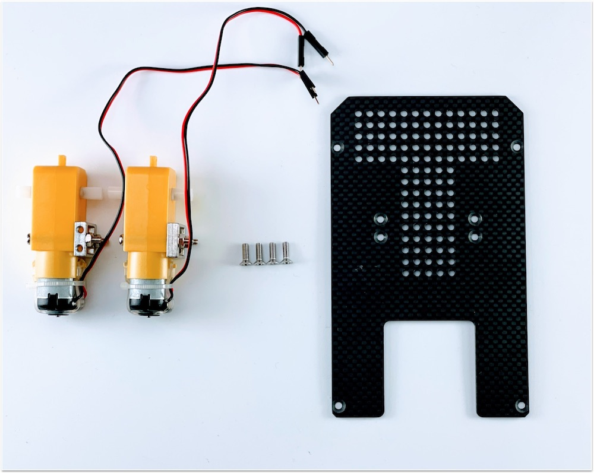
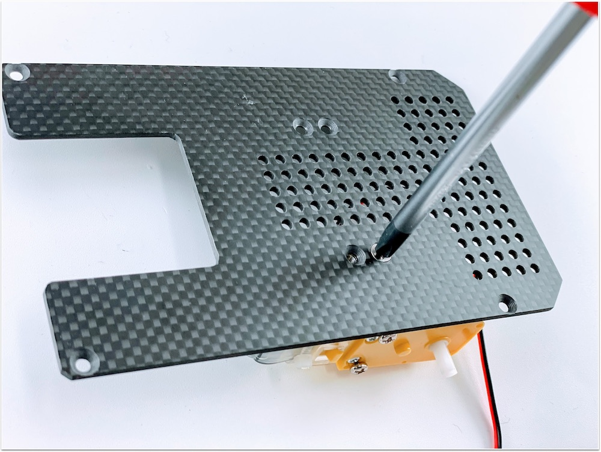
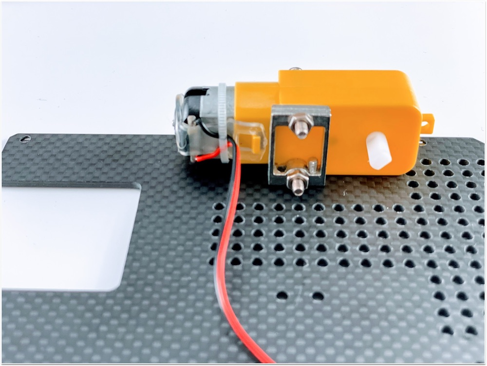


2. カーボン連結ネジの取り付け
| 写真 | 部品または工具 | 個数 |
|---|---|---|
 |
3.カーボン連結ネジ袋（下） | 1 |
|
プラスドライバー +2×100 | １本 |
カーボン連結用のスペーサーを接続します。


3. ボールキャスター組み立て
| 写真 | 部品または工具 | 個数 |
|---|---|---|
 |
ボールキャスター | 1 |
 |
２．キャスター固定ネジ | １袋 |
|
プラスドライバー +2×100 | １本 |
キャスターの組み立てをおこないます。

まず、ボールを取り付けます。

3本の棒をボールのうえに配置します。

プラスチック部品または工具を取り付けます。

長い方に取り付け、ネジで固定します。


4. ボールキャスターの固定
| 写真 | 部品または工具 | 個数 |
|---|---|---|
| 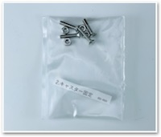 | 2.キャスター固定ネジ袋 | 1 |
| ボールキャスタースペーサー 材質：アルミ ※または、下のスペーサーになります。 |
1枚 | |
 |
ボールキャスタースペーサー軽量タイプ 材質：アルミ |
1枚 |
 |
カーボン中段 | 1 |
|
プラスドライバー +2×100 | １本 |
ボールキャスターをカーボン中段に取り付けます。

スペーサーを挟み、ネジでキャスターを固定します。

M3ナットをはめて、ドライバーで４箇所締め付けます。

取り付け後 裏

表になります。ボールキャスターが固定できました。

5. カーボン下段とカーボン中段の取り付け
| 写真 | 部品または工具 | 個数 |
|---|---|---|
 |
4.カーボン固定ネジ(上) | 1 |
カーボン下段とカーボン中段を連結します。
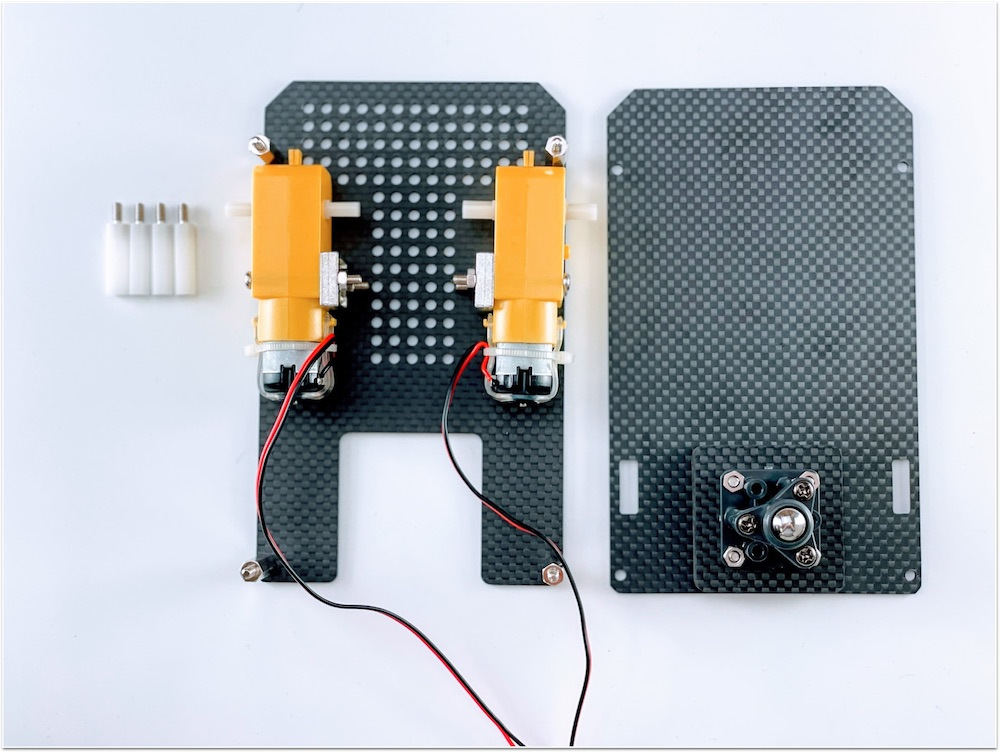
モーターの線も穴から出しておきます。
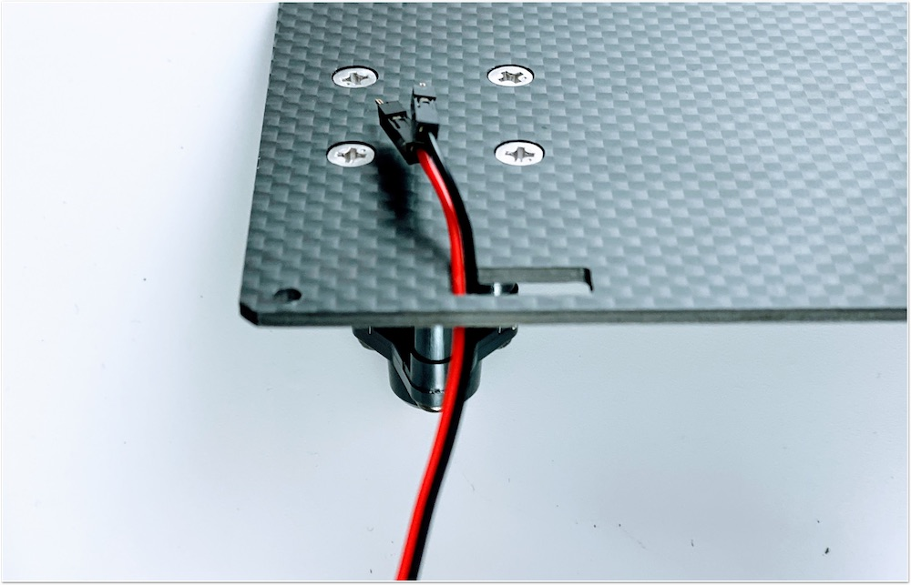
白いスペーサーで、四隅を固定します。

6. タイヤの取り付け
| 写真 | 部品または工具 | 個数 |
|---|---|---|
 |
タイヤ | 2 |
 |
精密ドライバー | 1 |
タイヤを装着します。


7. モバイルバッテリーの取り付け
| 写真 | 部品または工具 | 個数 |
|---|---|---|
 |
両面テープ | 1 |
 |
モバイルバッテリー（旧パッケージの場合） | 1 |
| モバイルバッテリー（新パッケージの場合） | 1 |
モバイルバッテリーを両面テープで装着します。


8. カーボン上段の取り付け
| 写真 | 部品または工具 | 個数 |
|---|---|---|
 |
6.Jetson固定ネジ袋 | 1 |
 |
カーボン上段 | 1 |
 |
精密ドライバーセット ED−20 | 1 |
Jetson固定ネジを取り付けます。


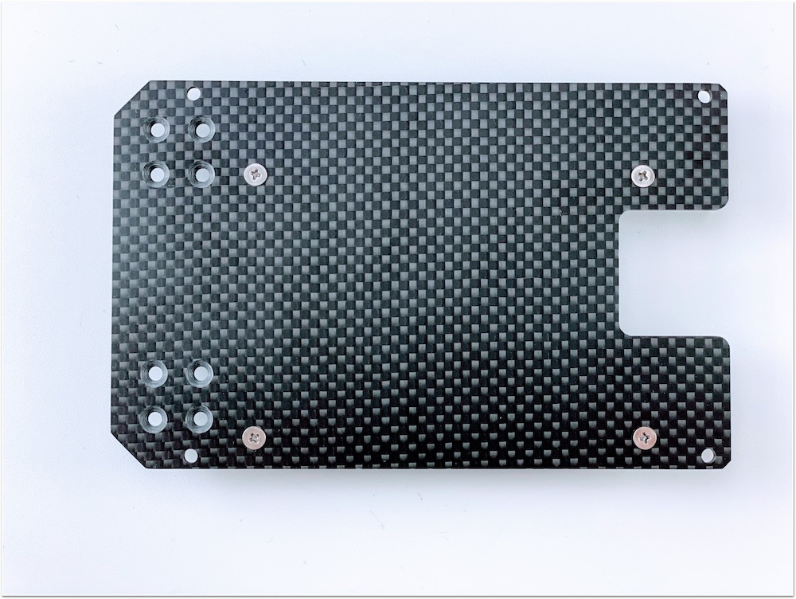

9. Wi-Fi モジュールの取り付け
| 写真 | 部品または工具 | 個数 |
|---|---|---|
 |
Jetson Nano 開発者キット B01,A02 | 1 |
 |
Intel Dual Bandwireless-AC 8265 Desktop Kit | 1 |
 |
カメラマウント | １ |
| Wi-Fiアンテナ支持 | 1 | |
 |
スパナ | 1 |
|
精密ドライバーセット ED−20 | 1 |
|
プラスドライバー +2×100 | 1 |
Kitに搭載されているJetson Nanoが、Rev.B01かRev.A02かを確認します。見分け方として、CSIカメラポートが2つ付いているのがRev.B01で、1つしか付いていないのがRev.A02になります。

Wi-Fi モジュールを取り付けるために、Jetson Nano モジュールを取り外します。

両側のネジを外します。

両サイドの留め具を外に開き、Jetson Nano モジュールを取り外します。

両サイドに広げると、Jetson Nano モジュールがポップアップします。

Jetson Nano モジュールを取り外すと、ネジが見えます。

Wi-Fi モジュールを取り付けるために、真ん中のネジを外しておきます。

※ネジの山カケには注意しましょう。
Wi-Fi モジュールは、Intel Dual Bandwireless-AC 8265 Desktop Kitを取り付けます。

技適
箱の横に技適番号が記載されています。

| 項目 | 認証番号 |
|---|---|
| R | 003‐160104 |
| T | D160055003 |
箱から取り出し、スパナで金色のアンテナ固定ネジをゆるめ、銀色のプレートから取外しておきます。

モジュールの端子と接続します。

取り外したアンテナ端子をWi-Fiアンテナ支持金具に取り付けます。Wi-Fiアンテナ支持金具に穴確認し端子を通るようにまわしアンテナ端子を貫通させます。

外したアンテナ固定ネジは、カメラマウントのパーツに取り付け替えます。
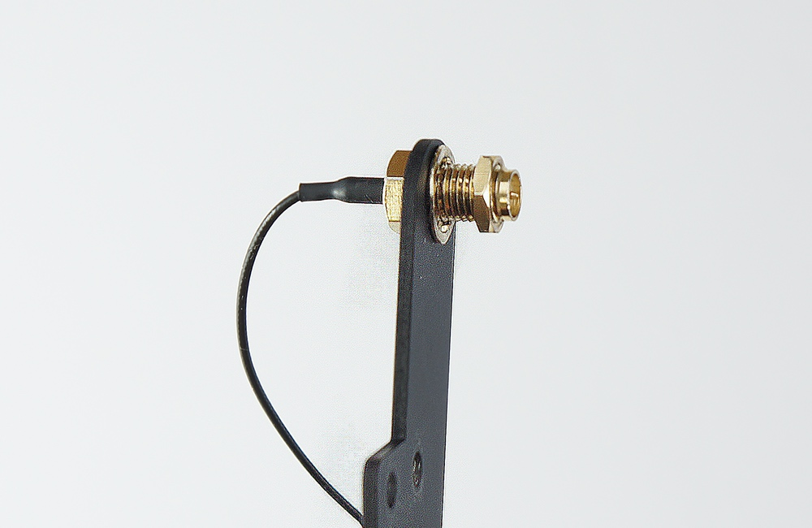
スパナで締めます。

Wi-Fiアンテナ支持金具の左右に取り付けます。

Wi-Fi モジュールの端子に２本のアンテナケーブルを接続します。

以下のようになります。

Wi-Fi モジュールをJetson Nano 開発者ボードにドライバーで取り付けます。

Wi-Fi モジュールの取り付けが完了したら、Jetson Nano モジュールを再び取り付けます。

Wi-Fiアンテナケーブルの配線

Jetson Nano モジュールを再び装着し、２箇所ネジ止めします。

できあがりとなります。

10. カメラの取り付け
| 写真 | 部品または工具 | 個数 |
|---|---|---|
 |
CAM026 IMX219-160° | 1 |
 |
５．カメラ固定ネジ（袋） | 1 |
 |
六角レンチ | 1 |
カメラモジュールを用意します。

カメラモジュールをカメラマウントに取り付けます。カメラモジュールの４つの穴に六角レンチを使いM2.0のタッピンングビスでカメラを取り付けます。

カメラの取り付けは終了となります。

11. 本体に結合
| 写真 | 部品または工具 | 個数 |
|---|---|---|
|
５．カメラマウント固定ネジ（袋） | 1 |
|
プラスドライバー +2×100 | 1 |
 |
ナットドライバー 5.5mm | 1 |
カメラマウントとWi-Fiアンテナ支持金具をカーボン上段に固定します。

カーボン上段の裏から４箇所、皿ネジで固定します。
カメラマウントは４箇所、M3のナットを使用し、ナットドライバーで固定します。

カメラマウントとカーボン上部の取り付け完了です。
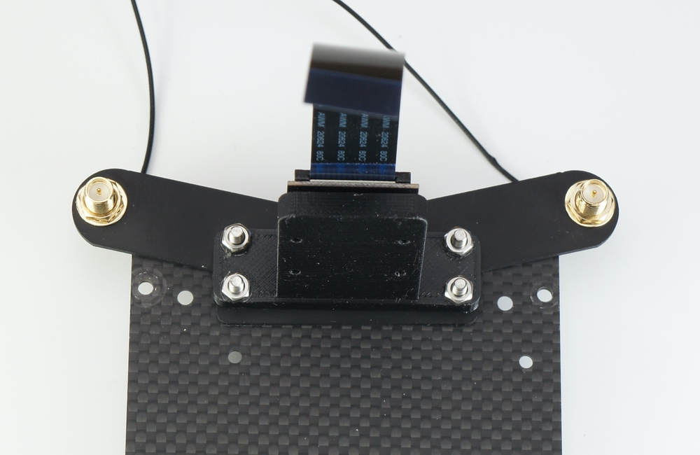
カーボン上段とカーボン中段を結合します。

カーボン上段とカーボン中段を結合します。M3ナットで四隅を固定します。

ナットドライバーでナットを締めます。

12. Jetson取り付け
| 写真 | 部品または工具 | 個数 |
|---|---|---|
|
Jetson Nano 開発者キット B01,A02 | １枚 |
|
精密ドライバーセット ED−20 | 1 |
Jetson Nanoをカーボン上部に取り付けます。

スクリューねじでJetson Nanoを４箇所のネジで固定します。

13. カメラケーブルの取り付け


14. CPUファンの取り付け
| 写真 | 部品または工具 | 個数 |
|---|---|---|
 |
CPUファンと取り付けジグ | 1セット |
 |
CPUファン取り付け用ネジ | 1 |
|
六角レンチ | 1 |


15. コントローラーボードの取り付け
| 写真 | 部品または工具 | 個数 |
|---|---|---|
 |
コントローラーボード | 1 |


16. SDカードの差し込み
| 写真 | 部品または工具 | 個数 |
|---|---|---|
 |
SD Card(64GB),SDカードケース SunDisk |
１個 |


17. Jumperピンの設定
| 写真 | 部品または工具 | 個数 |
|---|---|---|
 |
Jumperピン（Jetson Nano 開発者キットB01は標準で付属） | １個 |
使用するJetson NanoがRev.A02か、Rev.B01かを確認します。
DC電源からの給電を有効にするために、Rev.A02、Rev.B01の場合で、下記の箇所のJumperピンの設定をおこないます。
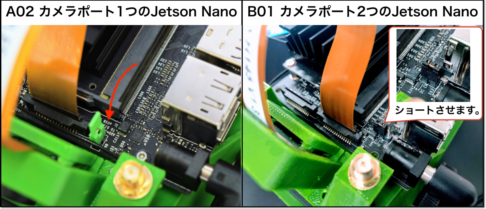

18. その他
| 写真 | 部品または工具 | 個数 |
|---|---|---|
 |
結束バンド | 1 |
Wi-Fiアンテナのケーブルを結束バンドを使用してケーブルを収納します。

結束バンドでWi-Fiケーブル2本を束ねます。

束ねたケーブルは、Jetson Nano 開発者キットの基板の下へ格納します。

19. 完成
| 写真 | 部品または工具 | 個数 |
|---|---|---|
 |
マイクロUSBケーブル | 1 |
 |
DCプラグ-USBケーブル | 1 |
|
Intel Dual Bandwireless-AC 8265 Desktop Kit | 1 |
いよいよ完成です。電源接続します。モバイルバッテリーからJetson NanoのDCジャックとマイクロUSBに接続します。

Wi-Fiアンテナを立てます。アンテナを回してねじ込みます。

左右にWi-Fiアンテナを２つ立てます。

マイクロUSBケーブルは下記のようにコントローラーボードと繋ぎます。

次に、DCプラグケーブルをモバイルバッテリーと刺し、DCプラグ側は、モーターの間を前方にケーブルを通します。
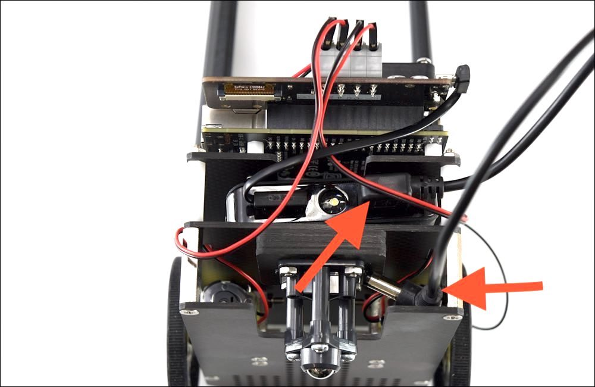
DCプラグがボディの間を通過した様子。

DCプラグをJetson Nano 開発者キットのDCジャックへ接続します。Jetson Nanoの電源が入ります。

おめでとうございます。JetBotの完成です。カメラモジュールのレンズキャップを装着している場合は外します。